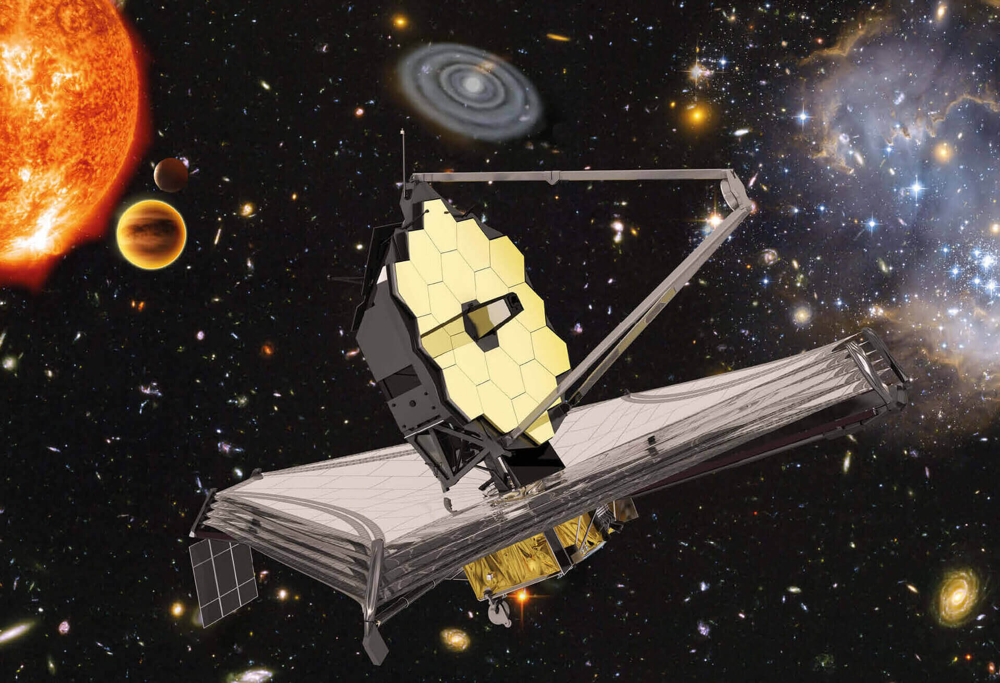

Unveiling the Pillars of Creation in Stunning Detail
JWST explores the iconic Pillars of Creation with unprecedented clarity, revealing young stars hidden by dust and the formation in the Eagle Nebula.
Read more →
The James Webb Space Telescope represents humanity’s most ambitious attempt to understand the universe. Orbiting 1.5 million kilometres from Earth, JWST peers deeper into space and time than any observatory before it, revealing the secrets of the early universe, distant galaxies, and the formation of planets in solar systems.
Learn MoreYears Back in Time
Gold-Plated Segments
Primary Mirror Diameter
JWST explores the iconic Pillars of Creation with unprecedented clarity, revealing young stars hidden by dust and the formation in the Eagle Nebula.
Read more →
Webb discovers remarkably mature galaxies that existed just 300 million years after the Big Bang, forcing astronomers to reconsider theories of galaxy formation.
Read more →
In a major breakthrough for exoplanet research, JWST identifies signs of water vapor in the atmosphere of a rocky exoplanet in the habitable zone of its star.
Read more →